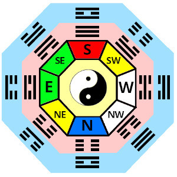

This site explains Chinese geomancy called Taoist Classical Feng Shui.
It covers the basic theory and includes practical design suggestions.
Please use it as a resource to discover and implement change.
(With the proviso that this is my own interpretation.)

Introduction
Geomancy is the reading of the Earths energies (which can also include planetary movement) and how we are affected by them.
- geo=earth.
- mancy=divination or reading.
Most Ancient Cultures, (for instance:Aboriginal, African, American Indian, Celtic, Chinese, Egyptian, Indian, Nordic, Mayan), have some tradition of geomancy.
Feng Shui, the Chinese Taoist form of Geomancy is, perhaps, the most sophisticated, comprehensive and well documented type. It is a very logical system based on observations and explanations of energy(Qi) creation and interaction.
Taoism emerged from the thoughts and writings of 'Lao Tzu' who most famously accredited book is the 'Tao te ching'. His insight into the workings of the cosmos and living in harmony formed the basis of all subsequent Taoist practices including martial arts like Tai Qi Chuan and Qi Gong, Medicine (Acupuncture, Herbal remedies) and Internal Alchemy.
Feng Shui was developed to balance environments for harmonious living.
NB. Origionally for the emperor, later adopted more widely.

Heavenly(stars),
Cosmic Particle dust,
Earthly energies.
Feng (wind) is an invisible fast moving energy (Qi) flowing, like wind, above the ground and filling every space there is.
Imagine 'Feng' as electromagnetically charged particles in the atmosphere.
Its characteristics are dependent upon direction of flow.
Feng ( wind, above )

Shui ( water, below )
Qi (energy), its creation, qualities and interactions is key.
Taoists identified 5 general types of energy(Qi) called the 5 elements and found that 8 Directions (Bagua) affected them.
The Art of Feng Shui aims to balance and maximize the potential of these subtle environmental energies to benefit occupants.
By reading the energies present, interactions can be calculated and advise on suitabilty, countering malign influences, planning layout, and decor given.

Bagua (8 directions)
There are a number of Schools of Feng Shui: The Form School, The Compass School, The Black Sect School, The Flying Star School & The Classical School.
The Classical School is a combination of, primarily, the 'Form' and 'Compass' Schools. This is what I cover on this site.
-
In short, an assessment includes:
- Form: How the topography of the surroundings and the shape of the building affects the quality and flow of energy(Qi)
- Compass orientation: How direction of flow affects energy(Qi).
- Reading of the above interactions, referencing portents derived from 'The Five Element' cycle.Suggestions for external and internal planning, placement of furniture, color usage and more detailed changes.
- Counteract Malign influences.
- Personal Horoscope: This can be included as another level of detail to fine tune a consultation.

Lo Pan,
magnetic compass,
Please look at the more detailed sections and the reading list to learn more.